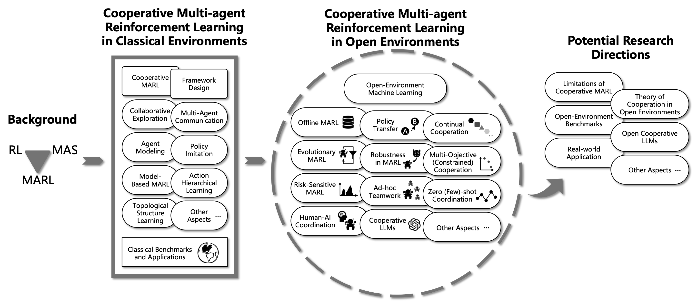
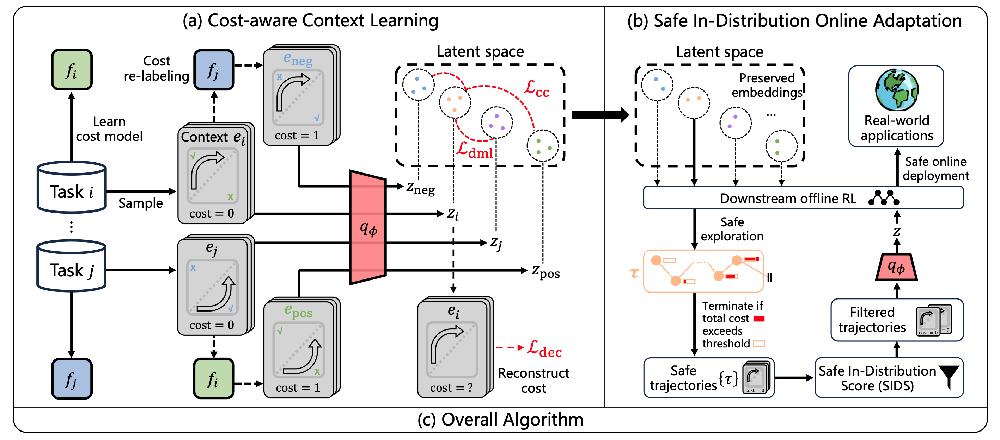
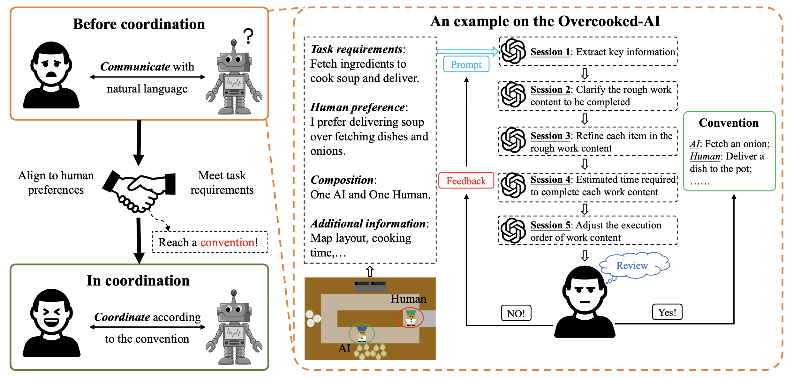
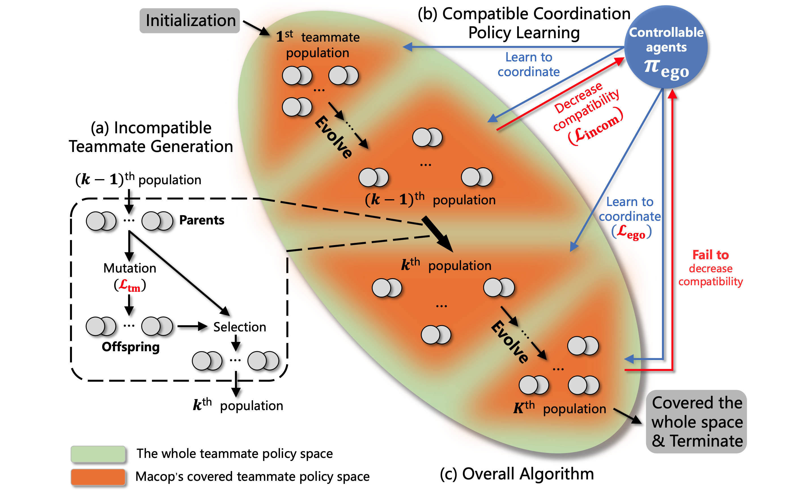
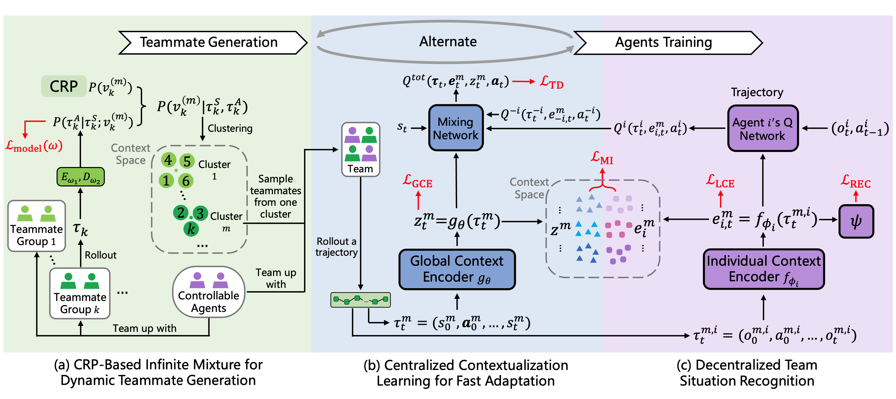
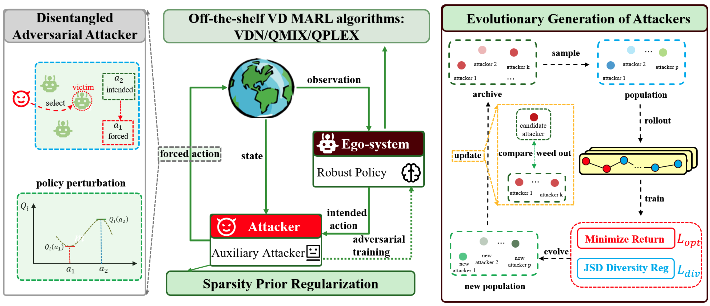
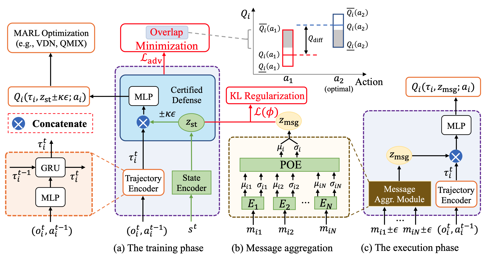
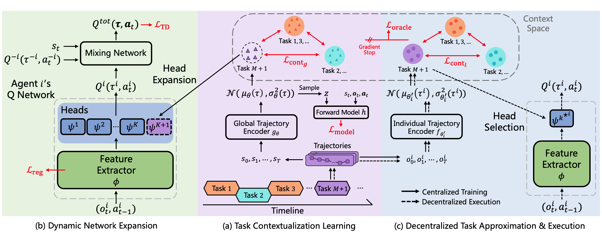

Lihe Li @ LAMDA, NJU-AI
李立和 |
|

{kind=link}
Biography
Currently I am a first year graduate student of School of Artificial Intelligence in Nanjing University and a member of LAMDA Group, led by professor Zhi-Hua Zhou.
I received my B.Sc. degree of Engineering from School of Artificial Intelligence, Nanjing University in June 2023. In September 2023, I was admitted to pursue a M.Sc. degree in Nanjing University, under the supervision of Professor Yang Yu without entrance examination.
Research Interests
Currently my research interest is Reinforcement Learning, especially in Multi-agent Reinforcement Learning.
Publication
* indicates equal contribution
|  |
Lei Yuan, Ziqian Zhang, Lihe Li, Cong Guan, Yang Yu arxiv preprint, 2023 We review multi-agent cooperation from closed environment to open environment settings, and provide prospects for future development and research directions of cooperative MARL in open environments. [Chinese version] |
|  |
Cong Guan, Ruiqi Xue, Ziqian Zhang, Lihe Li, Yi-Chen Li, Lei Yuan, Yang Yu The 23rd International Conference on Autonomous Agents and Multi-Agent Systems (AAMAS 2024), 2024 We propose COSTA to deal with offline safe meta RL problems. We develope a cost-aware task inference module using contrastive learning to distinguish tasks based on safety constraints, and propose a safe in-distribution online adapation mechanism. |
|  |
Cong Guan, Lichao Zhang, Chunpeng Fan, Yi-Chen Li, Feng Chen, Lihe Li, Yunjia Tian, Lei Yuan, Yang Yu arxiv preprint, 2023 We propose employing the large language model (LLM) to develop an action plan (or equivalently, a convention) that effectively guides both human and AI. |
|  |
Lei Yuan, Lihe Li, Ziqian Zhang, Feng Chen, Tianyi Zhang, Cong Guan, Yang Yu, Zhi-Hua Zhou The Fifth Distributed Artificial Intelligence Conference (DAI 2023), Best Paper Award, 2023 We propose Multi-agent Compatible Policy Learning (MACOP), where we adopt an agent-centered teammate generation process that gradually and efficiently generates diverse teammates covering the teammate policy space, and we use continual learning to train the ego agents to coordinate with them and acquire strong coordination ability. [talks in English/Chinese] |
|  |
Ziqian Zhang*, Lei Yuan*, Lihe Li, Ke Xue, Chengxing Jia, Cong Guan, Chao Qian, Yang Yu Proceedings of the 39th Conference on Uncertainty in Artificial Intelligence (UAI 2023), 2023 We formulate Open Dec-POMDP and propose Fast teammate adaptation (Fastap) to enable controllable agents in a multi-agent system to fast adapt to the uncontrollable teammates, whose policy could be changed with one episode. |
|  |
Lei Yuan*, Ziqian Zhang*, Ke Xue, Hao Yin, Feng Chen, Cong Guan, Lihe Li, Chao Qian, Yang Yu Proceedings of the 37th AAAI Conference on Artificial Intelligence (AAAI 2023), Oral Presentation, 2023 We formulate Limited Policy Adversary Dec-POMDP and propose ROMANCE to enable the trained agents to encounter diversified and strong auxiliary adversarial attacks during training, achieving high robustness under various policy perturbations. |
|  |
Lei Yuan, Tao Jiang, Lihe Li, Feng Chen, Zongzhang Zhang, Yang Yu Science China Information Sciences (SCIS) We propose CroMAC to enable agents to obtain guaranteed lower bounds on state-action values to identify and choose the optimal action under a worst-case deviation when the received messages are perturbed. |
|  |
Lei Yuan, Lihe Li, Ziqian Zhang, Fuxiang Zhang, Cong Guan, Yang Yu Submitted to IEEE Transactions on Neural Networks and Learning Systems (TNNLS) We formulate the continual coordination framework and propose MACPro to enable agents to continually coordinate with each other when the dynamic of the training task and the multi-agent system itself changes over time. [poster][code] |
Awards & Honors
- Outstanding Bachelor's Thesis of Nanjing University, 2023
- Outstanding Graduate of Nanjing University, 2023
Correspondence
Email:
lilh {AT} lamda.nju.edu.cn
Laboratory:
Room A201, Shaoyifu Building, Xianlin Campus of Nanjing University
Address:
Lihe Li, National Key Laboratory for Novel Software Technology, Nanjing University, Xianlin Campus Mailbox 603, 163 Xianlin Avenue, Qixia District, Nanjing 210023, China
(南京市栖霞区仙林大道163号, 南京大学仙林校区603信箱, 软件新技术全国重点实验室, 210023.)